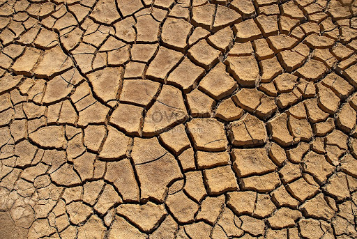

現況
你也許不知道，台灣是世界排名第十八位的缺水國家。在一般人的印象裡，台灣地區平均每年有二千多毫米的雨量，應該是水資源不虞匱乏的國家； 但是因為台灣地區地狹人稠、山坡陡峭、雨勢集中，再加上河川短促，所以大部分的雨水都迅速地流入海洋。因此，台灣地區每人每年平均可以分配到的水量， 只有全世界平均雨量的七分之一而已，換算成每人每年可用水量大約只有一千公噸（1,000立方公尺） ，以目前世界可用水量的標準來說，台灣地區是屬於缺水國家。
你也許不知道，台灣是世界排名第十八位的缺水國家。在一般人的印象裡，台灣地區平均每年有二千多毫米的雨量，應該是水資源不虞匱乏的國家； 但是因為台灣地區地狹人稠、山坡陡峭、雨勢集中，再加上河川短促，所以大部分的雨水都迅速地流入海洋。因此，台灣地區每人每年平均可以分配到的水量， 只有全世界平均雨量的七分之一而已，換算成每人每年可用水量大約只有一千公噸（1,000立方公尺） ，以目前世界可用水量的標準來說，台灣地區是屬於缺水國家。
都市化效應及濫墾濫伐
在一個植物茂盛的自然地域所降下的雨水，
經由植物的截流後，少部分以地表逕流的方式排出，而大部分被植物截流的雨水，
則滲入地下成為地下水，在旱季時會再滲出維持河川的基本流量。
但是都市面積隨著人口的增加而不斷地擴張，
混凝土和柏油等不透水層的面積也不斷地增加；
以及山坡地的濫墾、濫伐導致地表逕流增加，地下水補注減少，
結果「遇雨便成澇，不雨則成旱」。都市化後的地區也阻斷了當地水循環的路徑，
造成都市氣溫不斷上升的「熱島效應」。
降雨型態的改變
因為全球變遷的影響，使得原有的降雨型態產生變化。降雨型態的改變可以分為兩個方面來說明：
一是時間上的改變，也就是說原來是分布在一整年的雨量，卻集中在很短的時間內下完，這樣的變化不但無法讓我們有效利用水資源，甚至會發生大洪水及乾旱；
另一個是空間上的改變，也就是說原來應該下在水庫集水區的雨水，卻下在水庫下游或海上，使我我們無法有效的攔截利用。
洗手搓肥皂時將水龍頭關緊：省水5公升/天
洗臉以盆槽代替水沖洗：省水7公升/次
刷牙用漱口杯：省水5公升/次
盆浴改淋浴：省水55公升/次
洗菜以盆槽代替水流沖洗：省水5公升/次
澆花以洗菜、洗米水代替：省水３公升/次
洗車用擦車代替水沖：省水180公升/次
熱水流出前的冷水再利用：省水9公升/次
洗衣改用省水流程：省水15公升/人
馬桶改用省水二段式：省水30公升/天
水龍頭考克轉小降低水流量
每人每天若都能做到上述節水妙招，平均一天可以省下至少100公升的乾淨水資源，積沙成塔， 每一次的省水行動對於台灣這個十分缺水的國家都是莫大的幫助。更希望透過本網站能夠增加民眾對於水資源的重視， 從而由內而外珍惜愛護水資源。